FoodLuck MEO 操作説明書 03
その他
店舗追加・店舗データ更新・スマホ版・ワークフロー・通知やセキュリティ設定の確認資料
| このカテゴリの考え方 「その他」には、日常の投稿やクチコミ返信ではなく、設定変更、確認、トラブル対応に関わる機能が集まっています。店舗側で見てよいもの、FoodLuck側へ相談してから進めるものを分けて確認してください。 |
|---|
1. その他カテゴリで扱うこと
| 分類 | 主な内容 | 店舗側の使い方 | 注意点 |
|---|---|---|---|
| 画面の見方 | TOPメニュー、ダッシュボード | 今どの数字を見るか確認する | 詳細分析は各カテゴリ資料で確認 |
| 店舗管理 | 新規追加、一括追加、データ更新、削除 | 自店舗の情報確認が中心 | 追加・削除はFoodLuckへ相談 |
| スマホ版 | 投稿、写真、クチコミ、ダッシュボード | 外出先で最低限の確認・対応 | PC表示を基本にする |
| ワークフロー | 申請、承認、却下、承認時編集 | 投稿や返信を承認制にする | 登録しても承認前は反映されない |
| 通知・連携 | 送信用メール、アラート、アカウント連携一覧 | 通知先や連携状態を確認する | 一括更新は誤入力に注意 |
| セキュリティ | MFA、IPアドレス制限 | ログイン保護を強める | 設定は担当へ相談 |
管理画面: 左メニューから各機能へ進む

- 左メニューからGoogleデータ連携、順位レポート、プロモーション、SNS連携などを開きます。
- 店舗名を確認してから作業します。
2. TOPメニューとダッシュボードの見方
ログイン直後のダッシュボードでは、インサイト情報、順位チャート、カレンダー順位レポートなどをまとめて確認できます。ここは細かい分析をする場所というより、店舗の状態をざっくり見る入口です。
FAQ画像: ダッシュボードで見る主な数字
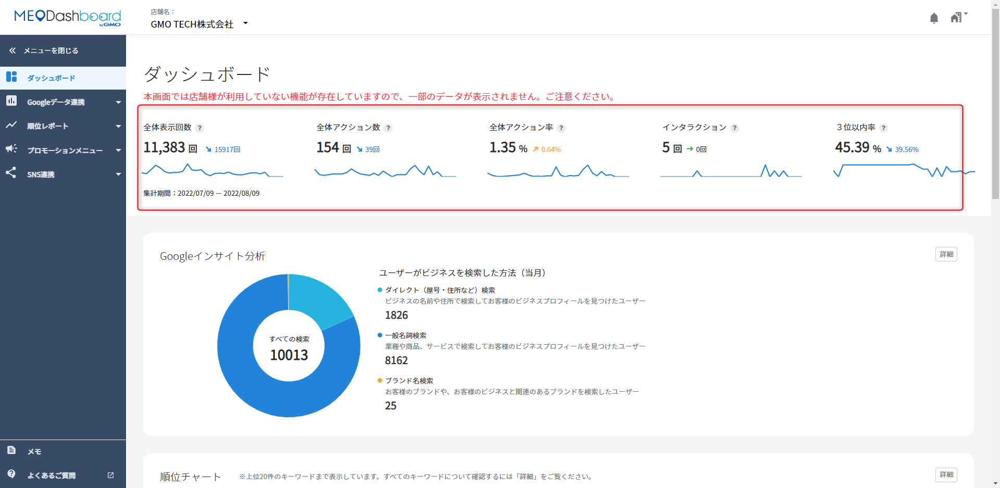
- 全体表示回数、全体アクション数、アクション率などの概要を確認します。
- 詳細を見る場合は、各カードの詳細ボタンから該当画面へ進みます。
FAQ画像: ダッシュボード内の順位・レポート
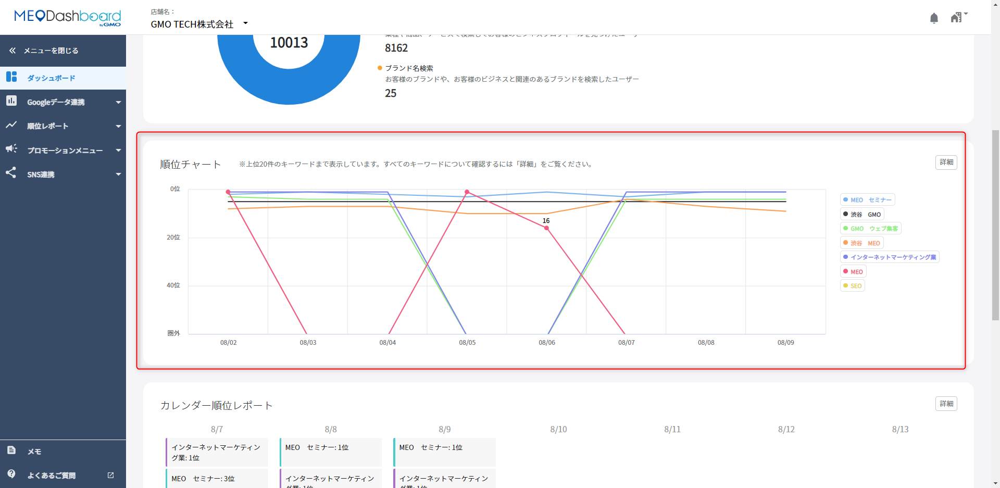
- 順位チャートやカレンダー順位レポートの概要を確認します。
- 月次確認では、順位とインサイトをセットで見ます。
- Googleデータ連携では、Googleインサイト、Googleビジネスプロフィール、GA連携を扱います。
- 順位レポートでは、順位チャート、キーワード分析、多地点順位、カレンダー順位レポートを確認します。
- プロモーションメニューでは、クチコミ促進やクーポン管理を扱います。
- SNS連携では、LINE公式など外部SNS連携の設定を確認します。
3. 店舗追加・店舗データ更新
新店舗をFoodLuck MEOに追加する時や、管理用の店舗情報を直す時に使う操作です。Google上のお客様向け情報に関わる設定と、Dashboard内だけで使う管理情報が混ざるため、変更前に必ず確認します。
FAQ画像: 店舗一覧から追加へ進む
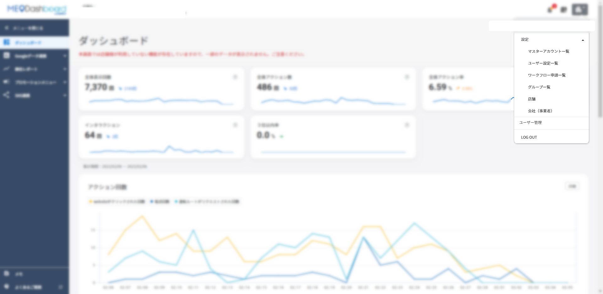
- 右上のビルマークから設定を開きます。
- 店舗一覧で+追加を選びます。
FAQ画像: 新規店舗の基本情報を入力する
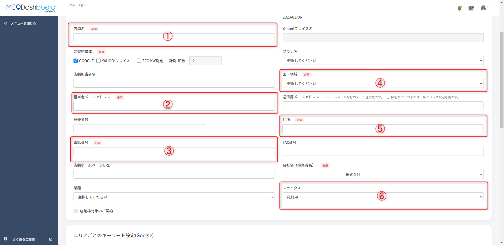
- 店舗名、担当者メールアドレス、電話番号、国、住所、ステータスなどを入力します。
- 住所は都道府県から番地まで正確に入れます。
FAQ画像: キーワード計測地点を設定する
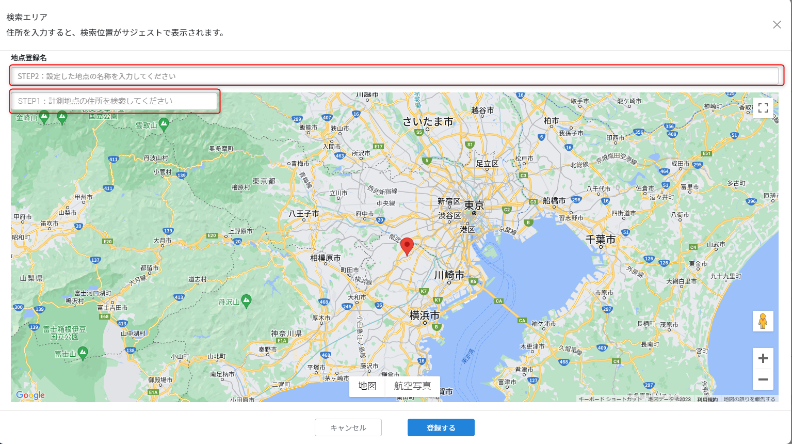
- 順位計測を行う場合は検索エリアを設定します。
- 店舗周辺、駅前、商圏の中心など、実際にお客様が検索しそうな地点を選びます。
| ステータス | 意味 | 店舗側の見方 |
|---|---|---|
| 確認中 | 下書きに近い状態 | まだ運用前の店舗として扱います。 |
| 契約中 | Dashboardで運用対象になる状態 | 通常運用する店舗です。 |
| 契約終了 | Dashboard上では非公開に近い扱い | 閉店・契約終了時に検討します。 |
| 店舗追加はFoodLuck側で確認 新規店舗追加や一括追加は、会社ID、店舗名、住所、電話番号、業種、ステータスなどの誤りが後から影響します。店舗側で勝手に追加せず、FoodLuck側と確認して進めます。 |
|---|
4. 一括追加・店舗データ更新・削除
FAQ画像: 複数店舗を一括追加する入口
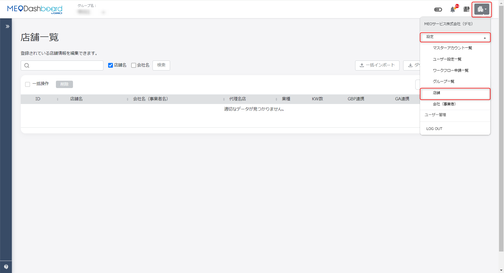
- 店舗テンプレートをダウンロードして、Excelで必要項目を入力します。
- 入力後、一括インポートから店舗インポートを行います。
FAQ画像: 店舗データ更新用テンプレート
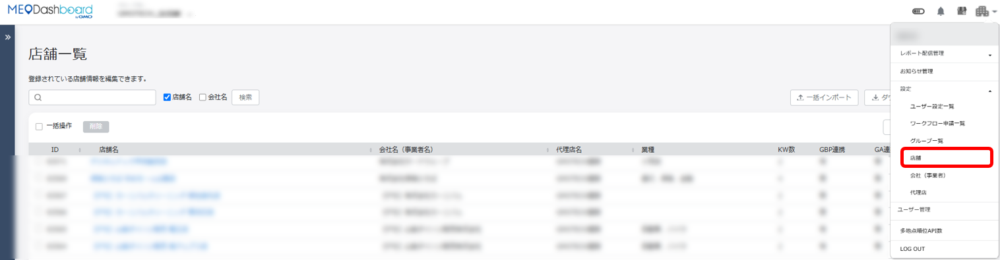
- 既存店舗の情報をまとめて更新する場合は、更新用テンプレートを使います。
- 変更したい箇所だけでなく、列の指定ルールも確認します。
- 右上のビルマークから設定、店舗を開きます。
- 個別に直す場合は、該当店舗を開いて修正し、登録します。
- 複数店舗をまとめて直す場合は、店舗テンプレート（更新用）をダウンロードします。
- Excelで変更箇所を編集し、保存します。
- 一括インポートから更新用ファイルを取り込みます。
| 店舗削除の注意 閉店や契約終了の時は、いきなり削除するより、契約終了ステータスで残す方が確認しやすい場合があります。削除は元に戻せない前提で、FoodLuck側に相談してから判断します。 |
|---|
- 送信用メールアドレスは、通知を受け取る宛先です。半角カンマ区切りで複数設定できます。
- グループで送信用メールアドレスを一括変更する場合は、店舗テンプレート（更新用）の指定列を編集します。
- GBP連携解除のエラー通知が来た場合、すぐ編集する予定があれば再連携を確認します。すぐ使わない場合でも、インサイト取得日を確認します。
5. スマホ版でできること
FoodLuck MEOはスマホからも確認できます。ただし、基本はPCまたはタブレットでの操作が推奨です。スマホ版は、外出先での確認、簡単な投稿、写真登録、クチコミ対応に使うものと考えてください。
FAQ画像: スマホ版のログイン後メニュー
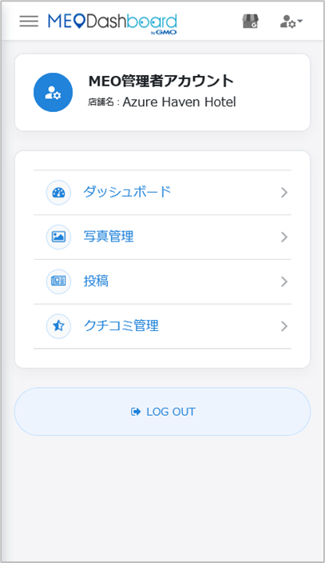
- 右上のGBPマークから自店舗のビジネス名を選択します。
- 操作したい機能を選びます。
FAQ画像: スマホ版の投稿画面
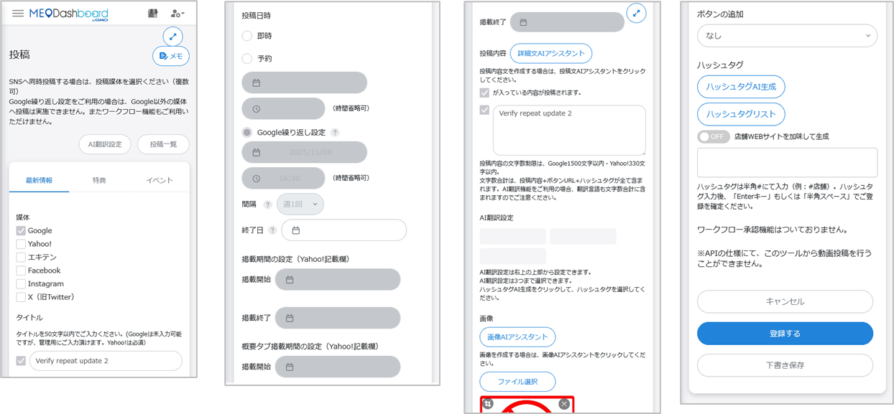
- スマホでは投稿項目が縦に並びます。
- 入力後、登録するまたは下書き保存を選びます。
FAQ画像: スマホ版のクチコミ管理
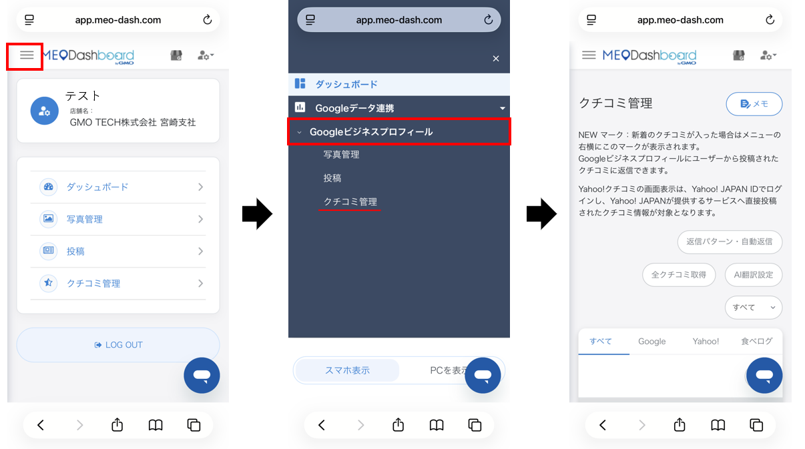
- スマホでもクチコミ詳細を開き、返信内容を確認できます。
- 返信前に店舗名と対象クチコミを確認します。
| スマホ対応機能 | できること | 現場での使い方 |
|---|---|---|
| ダッシュボード | 概要確認 | 外出先で数字をざっくり見る。 |
| 投稿 | 新規投稿・編集 | 急な営業案内やお知らせを出す。 |
| クチコミ管理 | 返信内容確認・返信 | 未返信を早く確認する。 |
| 写真管理 | 新規登録・写真予約 | 料理や店内写真をすぐ追加する。 |
| スマホ版の注意 スマホで操作できるのは主に個店の一部機能です。グループ機能や細かい設定変更はPCで行う方が安全です。PCで画面を小さく開くとスマホ表示になることがあるため、PC作業時は画面を広くして使ってください。 |
|---|
6. ワークフロー申請・承認
ワークフローは、投稿やクチコミ返信をすぐ公開せず、承認者の確認を通してから反映する機能です。本部確認が必要な会社、複数人で文面を見る店舗に向いています。
FAQ画像: 申請者が承認者を選択する
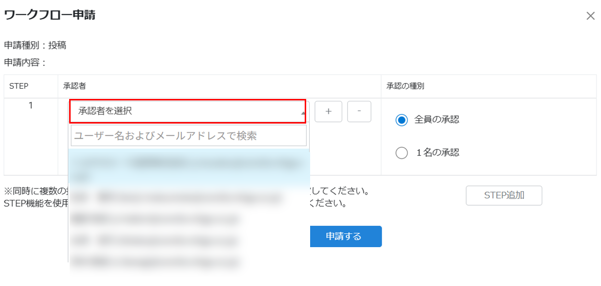
- 投稿やクチコミ返信作成後、ワークフロー申請を選びます。
- 承認者を選択し、全員承認または1名承認を選びます。
FAQ画像: ワークフロー申請を登録する
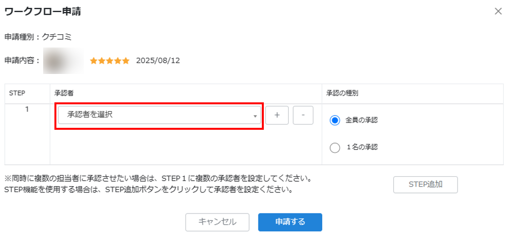
- 申請設定後、登録するを押すと承認者へメールが送られます。
- 承認前は即時反映されません。
FAQ画像: 承認画面で承認または却下する
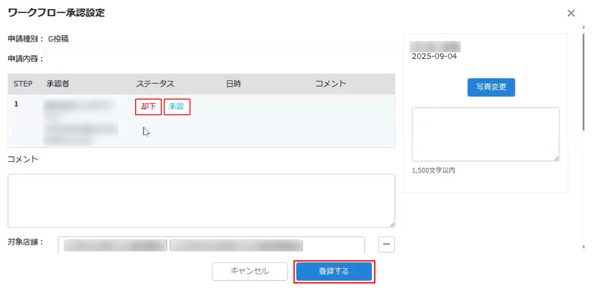
- 内容に問題がなければ承認します。
- 修正が必要な場合はコメントを入れて却下します。
- 未承認は、承認者の確認待ちです。
- 承認済は、公開・反映できる状態です。
- 却下は、修正して再申請が必要な状態です。
- 承認者側で文章を編集して承認できる場合もあります。編集後は登録するまで完了しません。
- 一括投稿やクチコミ一括返信でもワークフロー申請を使える場合があります。
7. 通知先・アカウント連携・運用状況
FAQ画像: アカウント連携一覧を確認する
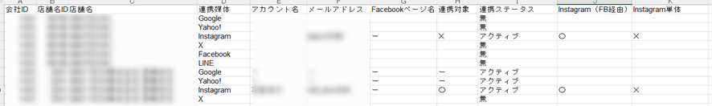
- Google、Yahoo!、Instagram、X、Facebook、LINEなどの連携状態を一覧で確認できます。
- 非アクティブや連携対象外がある場合は、媒体側の状態やDashboard設定を確認します。
FAQ画像: 連携対象の確認
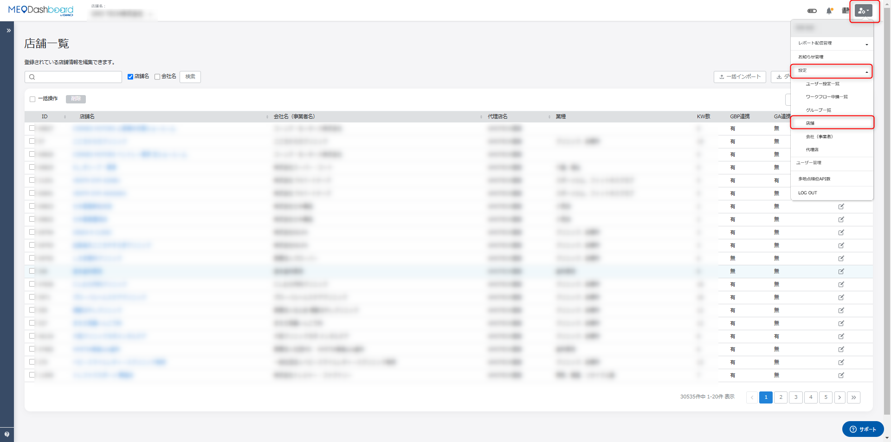
- 連携対象にチェックが入っていないと、投稿の吸い上げや反映ができない場合があります。
- SNS連携は媒体ごとに設定を確認します。
- Dashboardからのアラートメール送信先を変更したい場合は、新しく設定したいメールアドレスをFoodLuckへ連絡します。
- 個店の送信用メールアドレスは、店舗設定から確認できます。何も設定していない場合、担当者メールアドレスへ通知が飛びます。
- 各店舗運用状況では、店舗ごとの投稿数や写真枚数を確認できます。運用が止まっている店舗を見つける時に役立ちます。
- ジオロケーション設定は、順位計測に影響します。検索場所が変わると順位も変わるため、商圏に合う地点を選びます。
8. メモ・エラー・セキュリティ設定
FAQ画像: メモ機能の入口
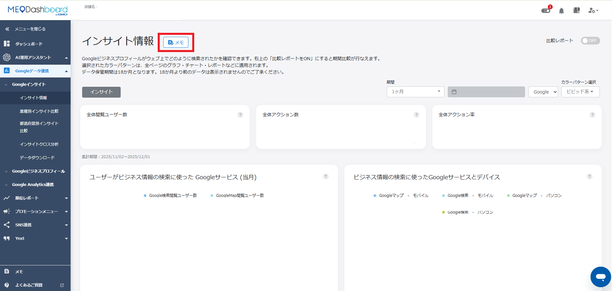
- 左下のメモ、または各画面タイトル横のメモから記録できます。
- 複数人で運用する時の申し送りに使います。
FAQ画像: MFAログイン画面
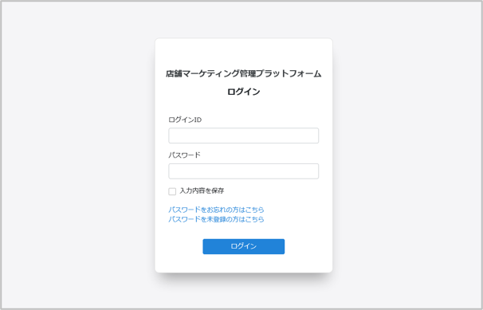
- MFAが有効な場合、IDとパスワードの後に6桁の認証コードを入力します。
- 認証コードはメールで届きます。
FAQ画像: IPアドレス制限の設定項目
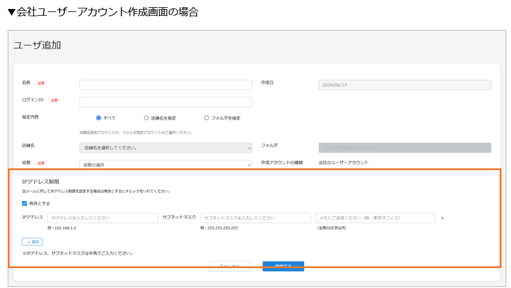
- IP制限は、指定した場所からのみログインできるようにする機能です。
- 利用する場合は担当へ相談します。
| 項目 | 店舗側で覚えること | 注意点 |
|---|---|---|
| メモ | 申し送りや前提条件を残す | 個人情報やパスワードは書かない。 |
| エラー | 投稿、写真、Excelの形式などで発生する | 原因を確認し、同じ操作を繰り返さない。 |
| MFA | 6桁コードでログインを確認する | コードは10分程度で期限切れ。入力ミスが続くとロックされる。 |
| IP制限 | 指定環境からだけログイン可能にする | 拠点変更や回線変更時にログインできなくなる場合がある。 |
| エラーが出た時の基本対応 Excelに余計なシートがある、画像や動画が規定外、投稿本文が長すぎる、URLや電話番号が多い、Googleのポリシーに触れる表現がある、特別営業時間の記入形式が違うなどが原因になります。画面のエラー内容を控え、FoodLuckへ相談してください。 |
|---|
9. その他カテゴリの確認チェックリスト
□ 自店舗を開いているか確認した
□ 新規店舗追加・削除・契約終了はFoodLuckへ相談した
□ 一括インポート前にExcelの列、必須項目、店舗IDを確認した
□ スマホで投稿・写真・クチコミを操作する時は、対象店舗と内容を確認した
□ ワークフロー申請は、承認者と承認方式を確認した
□ 通知先メールアドレスが現在の担当者に合っている
□ MFAやIP制限を使う場合、ログインできなくなった時の連絡先を確認した
□ エラーが出た時は、画面内容と操作内容を控えた
10. この資料に反映したFAQ記事
このカテゴリの下層FAQ記事29件を確認し、本文中の該当章へ反映しています。店舗側で操作する内容と、FoodLuck側へ相談してから進める内容を分けています。
| FAQ記事 | 反映した章 | 店舗向けの扱い |
|---|---|---|
| Dashboardからのアラートメール送信先を変更したい場合 | 通知先設定 | 状態確認、設定変更はFoodLuckへ相談 |
| GBP連携が解除された、とエラーメッセージが届いた際の確認方法 | 連携状態確認 | 状態確認、設定変更はFoodLuckへ相談 |
| IPアドレス制限機能 | セキュリティ | FoodLuck側で確認して進める項目 |
| MEO Dashboard 店舗データ更新方法 | 店舗追加・更新・削除 | FoodLuck側で確認して進める項目 |
| MEO Dashboardを見る端末について | スマホ版・端末 | 状態確認、設定変更はFoodLuckへ相談 |
| TOPにあるメニュー画面の見方 | 画面の見方 | 状態確認、設定変更はFoodLuckへ相談 |
| WF申請された投稿文章を編集して承認する方法 | ワークフロー申請・承認 | 状態確認、設定変更はFoodLuckへ相談 |
| 【グループ】ワークフロー申請の使用方法（申請者） | ワークフロー申請・承認 | 状態確認、設定変更はFoodLuckへ相談 |
| 【グループ】送信用メールアドレスの一括追加・変更方法 | 通知先設定 | FoodLuck側で確認して進める項目 |
| 【個店】ワークフロー申請の使用方法（申請者） | ワークフロー申請・承認 | 状態確認、設定変更はFoodLuckへ相談 |
| 【個店】送信用メールアドレスの設定方法 | 通知先設定 | FoodLuck側で確認して進める項目 |
| 【個店・グループ】ワークフロー申請の承認方法 | ワークフロー申請・承認 | 状態確認、設定変更はFoodLuckへ相談 |
| 【各店舗運用状況】店舗ごとの投稿数や写真枚数を確認する方法 | 運用状況・順位関連 | 状態確認、設定変更はFoodLuckへ相談 |
| アカウント連携一覧機能の使い方 | 連携状態確認 | 状態確認、設定変更はFoodLuckへ相談 |
| エラーの原因について | メモ・エラー対応 | 状態確認、設定変更はFoodLuckへ相談 |
| ジオロケーション（位置情報）の設定とMEO順位への影響 | 運用状況・順位関連 | 状態確認、設定変更はFoodLuckへ相談 |
| スマホ版 クチコミ管理 | スマホ版・端末 | 店舗側が確認・利用する項目 |
| スマホ版 ダッシュボード | スマホ版・端末 | 店舗側が確認・利用する項目 |
| スマホ版 写真管理 | スマホ版・端末 | 店舗側が確認・利用する項目 |
| スマホ版 利用方法 | スマホ版・端末 | 店舗側が確認・利用する項目 |
| スマホ版 投稿方法 | スマホ版・端末 | 店舗側が確認・利用する項目 |
| スマートフォン画面 | スマホ版・端末 | 店舗側が確認・利用する項目 |
| ダッシュボードに表示される情報や機能について | 画面の見方 | 店舗側が確認・利用する項目 |
| メモ機能について | メモ・エラー対応 | 店舗側が確認・利用する項目 |
| ログイン時の二段階認証（MFA機能） | セキュリティ | FoodLuck側で確認して進める項目 |
| ワークフロー機能の概要 | ワークフロー申請・承認 | 状態確認、設定変更はFoodLuckへ相談 |
| 店舗を削除する方法 | 店舗追加・更新・削除 | FoodLuck側で確認して進める項目 |
| 新規店舗追加の方法 | 店舗追加・更新・削除 | FoodLuck側で確認して進める項目 |
| 複数店舗を一括で追加する方法 | 店舗追加・更新・削除 | FoodLuck側で確認して進める項目 |